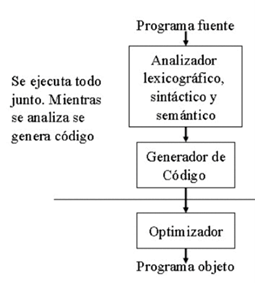
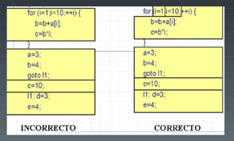
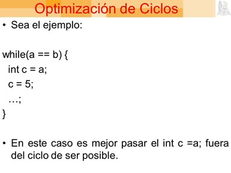
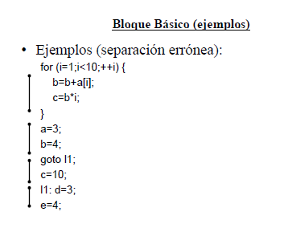
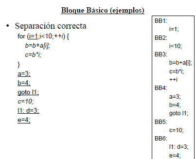

La fase de optimización de código consiste en mejorar el código intermedio, de modo que resulte un código máquina ms rápido de ejecutar Objetivo Obtener código que se ejecuta ms eficientemente según los criterios Tiempo de ejecución (optimización temporal) Espacio de memoria utilizado (optimización espacial)

Funcionamiento
Revisa el código generado a varios niveles de abstracción y realiza las optimizaciones aplicables al nivel de abstracción Representaciones de código intermedio de ms a menos abstractas.
Ejemplos
Si no se ha definido el orden de evaluación de los operando la siguiente optimización es válida
B=2*A+(A=c*d);
Pasar a
A=c*d;
B=A*3
3.1 Tipos de Optimización
- Momento de la compilación
- Independiente de máquina
-Transformaciones en código intermedio: reducción de coste, expresiones comunes, propagación de constantes
- Dependiente de máquina- Asignación de registros- Ordenación/selección de instrucciones sea del programa donde se aplica Local, ciclos, Globales De mirilla
3.1.1 Optimización Locales
la forma más simple de optimización se necesita analizar el cuerpo del procedimiento completo solo el bloque básico que se está tratando de optimizar.
Cada optimización local hace un poco por sí mismo la optimización en compiladores se realiza de forma repetida hasta que no sea posible mejorar. El optimizador se puede parar en cualquier momento para limitar el tiempo de compilación.
Las optimizaciones locales se realizan sobre el bloque básico Optimizaciones locales Folding Propagación de constantes Reducción de potencia Reducción de sub-expresiones comunes.
Un bloque básico es un fragmento de código que tiene una nica entrada y salida, y cuyas instrucciones se ejecutan secuencialmente. La idea del bloque básico es encontrar partes del programa cuyo análisis necesario para la optimización sea lo ms simple posible.
Ejemplos

Folding
El ensamblamiento es remplazar las expresiones por su resultado cuando se pueden evaluar en tiempo de compilacin (resultado constante).
Ejemplo
A=2+3+A+C -> A=5+A+C
Ejemplo:
Se añade el procesamiento de las constantes a las reglas de análisis de expresiones. Optimiza: 2+3+b -> 5+b.
3.1.2 Ciclos
Los ciclos son una de las partes más esenciales en el rendimiento de un programa
dado que realizan acciones repetitivas, y si dichas acciones están mal realizadas,
el problema se hace N veces más grandes. La mayoría de las optimizaciones
sobre ciclos tratan de encontrar elementos que no deben repetirse en un ciclo.
Ejemplos
while(a == b) {
int c = a;
c = 5;
…;
}
En este caso es mejor pasar el Int c =a; fuera del ciclo de ser posible.
El problema de la optimización en ciclos y en general radica es que muy difícil
saber el uso exacto de algunas instrucciones. Así que no todo código de proceso
puede ser optimizado. Otros uso de la optimización pueden ser el mejoramiento de
consultas en SQL o en aplicaciones remotas (sockets, E/S, etc.)

3.1.2 Ciclos
Los ciclos son una de las partes más esenciales en el rendimiento de un programa
dado que realizan acciones repetitivas, y si dichas acciones están mal realizadas,
el problema se hace N veces más grandes. La mayoría de las optimizaciones
sobre ciclos tratan de encontrar elementos que no deben repetirse en un ciclo.
Ejemplos
while(a == b) {
int c = a;
c = 5;
…;
}
En este caso es mejor pasar el Int c =a; fuera del ciclo de ser posible.
El problema de la optimización en ciclos y en general radica es que muy difícil
saber el uso exacto de algunas instrucciones. Así que no todo código de proceso
puede ser optimizado. Otros uso de la optimización pueden ser el mejoramiento de
consultas en SQL o en aplicaciones remotas (sockets, E/S, etc.)  
Bibliografia:
Lenguajes y Automatas 2. (2020). 2.2.2 Código P . 2021, de Blogspot Sitio web: https://equiponegro8.blogspot.com/2020/03/2_56.html
S/N. (S/N). UNIDAD II. 14/04/2021, de ITPN Sitio web: http://itpn.mx/recursosisc/7semestre/leguajesyautomatas2/Unidad%20II.pdf